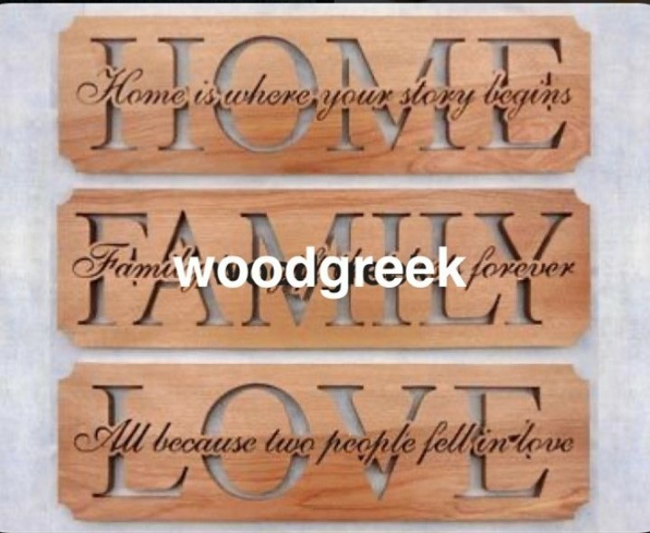
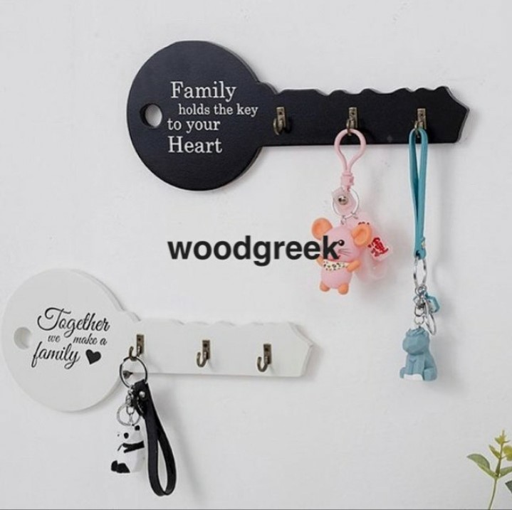
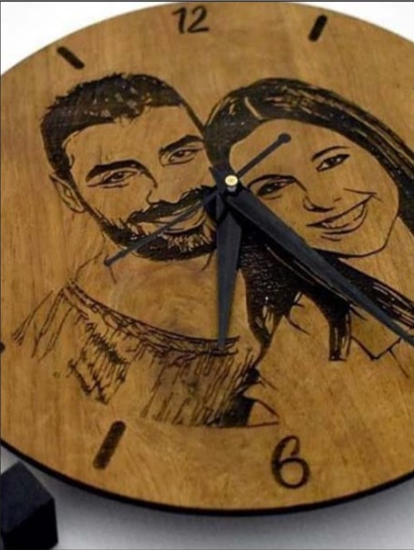
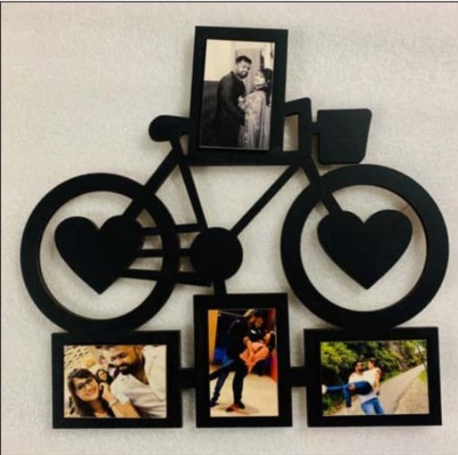
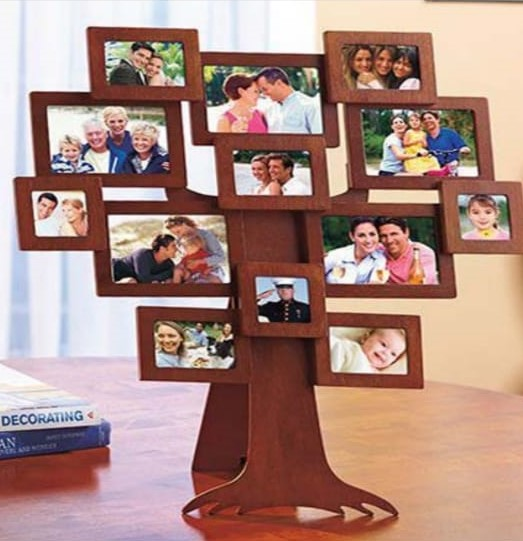
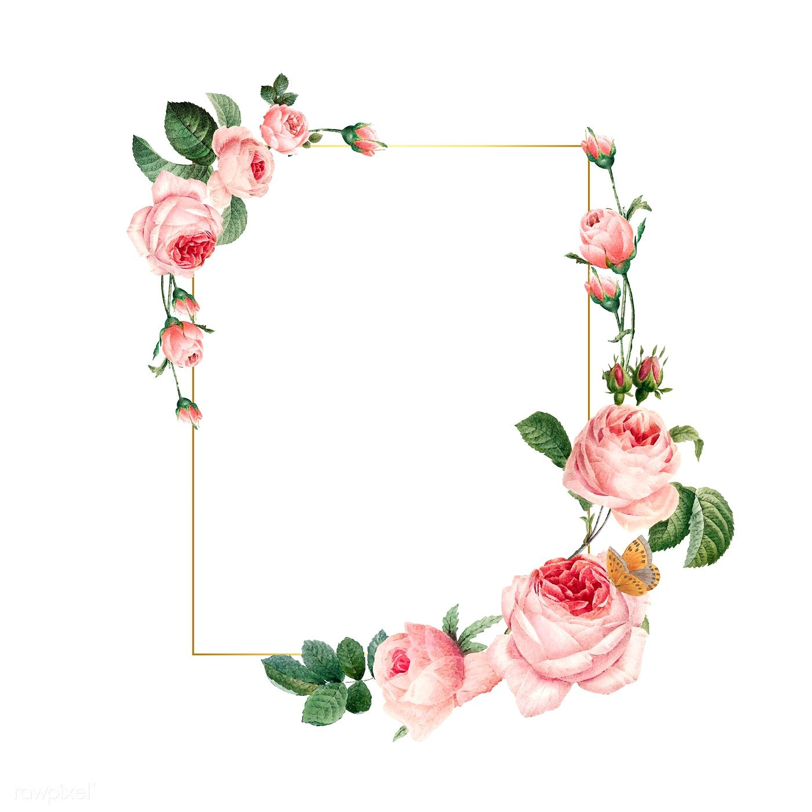
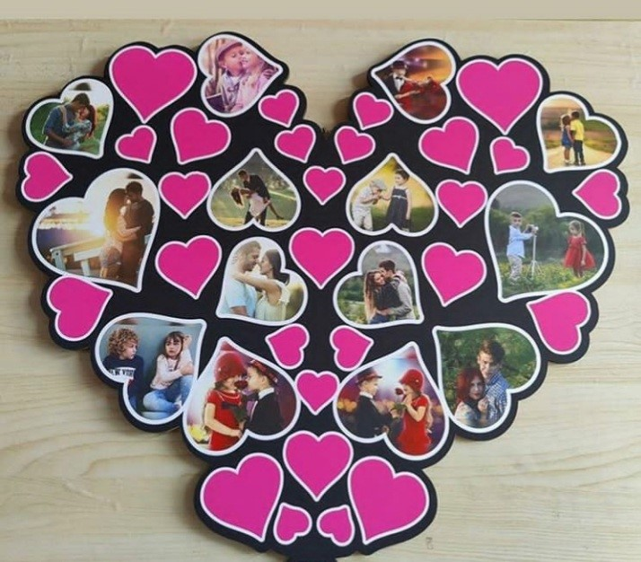
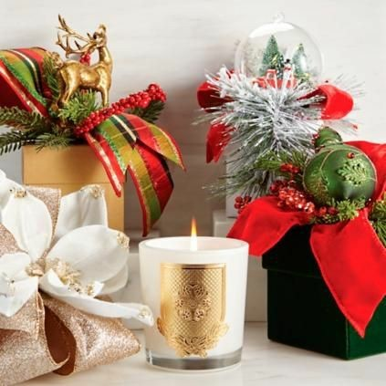
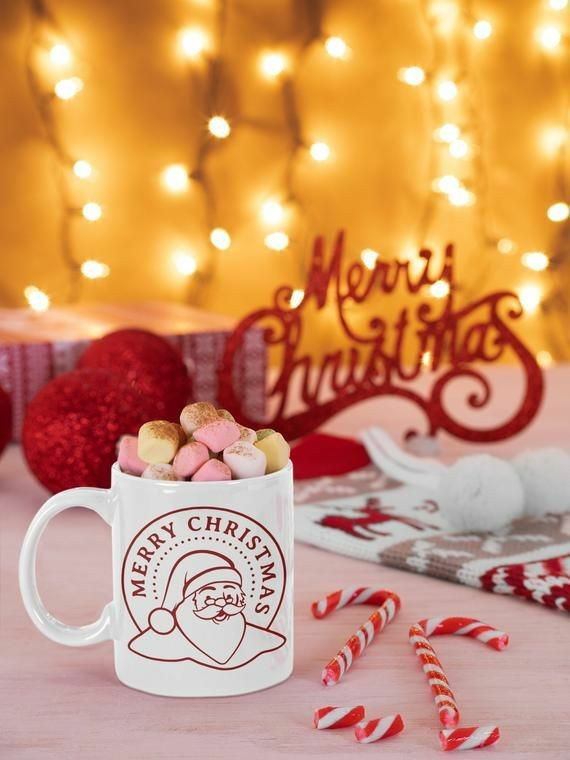
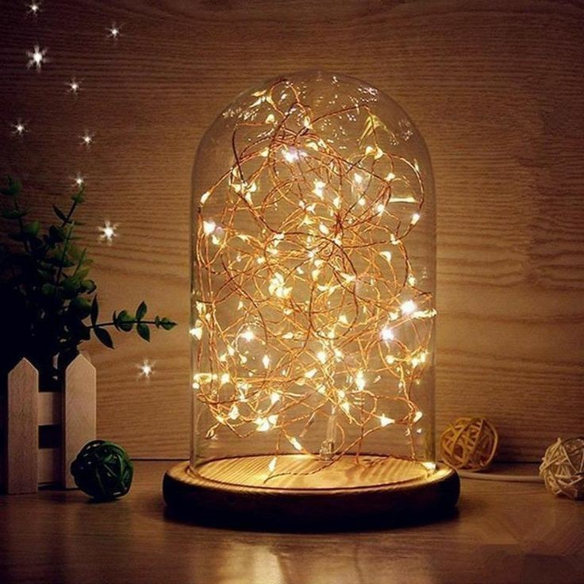

WoodGreek
LET THE WOOD SPEAK FOR YOUR ATTITUDE
Four way to add touch to your home decour
Lets Decorate with woodgreek:
The aura of an environment gets established by the presence of small accessories, useful pieces of stuff, decorations, and other decors. Especially considering houses or rooms, when the environment gets the touch of correct and beautiful pieces of stuff at the correct place, that establishes a positive aura. And who doesn’t wants to live in such a place? A house is made up of bricks and cement, but in case the final touch ends when the whole house, the rooms of the house is decorated. And these decorations need not be expensive antiques, these can be simple stuff which is also useful in day to day lives. This can be the gifts by some dear one, or something received at the family celebration or these can be those beautiful decors which you picked of your own choices. Here are some of the samples which hold the eligibility of perfect fit for your walls.
1. WOODEN WALL TILES

Ever wondered what to do with all the bare walls in your house? Decorate them most innovatively, by putting up a wall art customized with your pictures and personal experiences. Each time you’ll look towards your wall it will only reflect
happiness and the love you have for your family and friends.
2. NAMEPLATES AND KEY HOLDERS

The greatest feeling in the world is coming back home after a long and tiring day! The first thing that catches your attention, as soon as you reach home is the door sign of your house. Wouldn't it be wonderful to add a personal touch to
your nameplate, to give you a warm and welcoming feeling? These personalized nameplates with your names engraved on them are an ideal match for your homes.

3. CUSTOMIZED WALL AND TABLE CLOCKS

Time is precious, especially the moments spent with our loved ones. So bring home our customized analog wall clocks, which will always keep you on time as well as close to your best spent moments.
What an amazing feeling it is to wake up each morning and realize that you are dearly loved and adored. Gift your family and loved one customized table clocks as a memorable addition to their bedsides and tables!
4. PICTURE FRAMES

Your home is your haven because it is filled with the echoes of laughter, cries, and joys of our loved ones. Let the walls of your house speak a million little stories and moments created by you and your family. Perk up your bare walls by
adding picture frames and photo collages of the best spent moments in life.

Wait a minute, we haven't finished yet. These were just a few touch-ups that add a charm to your walls, but for ur dining table we have perfect combinations of utensils and the best part of that is the material they are made up of is
wood. Those include exclusives dining sets, boxes of glasses, coasters, and many more. Want to have a glance at these products, do click on the website mentioned below.
Visit us: www.woodgreek.com to add a personal touch to the interiors of your homes!!
valentines-week-list
CELEBRATE VALENTINE'S WEEK IN FUN WAYS:
THE QUARANTINE EDITION
We wish 2021 with the hope that things will improve and get better.
Valentine's week is the most fabled and also the most loved week of every year. Couples from every corner of the world eagerly waits for Valentine's week to occur so they can completely engulf themselves in the fever of love and spread as
much positive and loving vibes as they can in the world.
And now it is time to celebrate Valentine's Week. Even though the past year has been challenging for us, one should not let go the fun of Valentine's Week this year.
Can you believe it, the entire week before Valentine's day is dedicated to celebration of love, culminating to the greatest day for celebration of love, Valentine's day!
Take a look at the Lovely ideas for your Valentine's Week:
1. Rose Day (7th February 2021)

To begin with, the first day of the week in Rose day, a day when lovers greet each other with a red rose. As red roses symbolize deep and unflinching love, and also considered as God's own color, lovers from across the world give each
other highly-romantic and the freshest red roses to convey their feeling of love directly.
Gift your loved ones the precious rose of memories with WoodGreek range of roses.
2. Propose Day (8th February 2021)
If you have a secret crush on someone and waiting for special events or occasions to say 'I love you'! Stop guessing and start proposing.
3. Chocolate Day (9th February 2021)
Chocolates speak to the hearts of both men and women, make sure you find the best way to express yourself to your beloved. Getting personalised chocolates are the finest means of voicing your heart to your much-loved partner
4. Teddy Day (10th February 2021)

Teddies are undoubtly the cutest and most famous soft toys and are loved by every girl. The soft, cosy and cuddly toys can bring a smile on anyone's face. They may not have a heart but a capable of expressing your feelings to the one you love. So if you love someone then gift her a cute teddy on this teddy day, which will always remind of you.
Visit us : WoodGreek
5. Promise Day (11th February 2021)
A commitment holds great significance in every relationship, which means honesty and concern for our loved one. A Promise Day acts as an opportunity to recapture all the expectations and promises that we have set out.
6. Hug Day (12th February 2021)
Give your loved ones the hug of love with our exciting range of gifts.
Visit us : WoodGreek
7. Kiss Day (13th February 2021)
Kiss is the sweetest form expression to show love. You can express love in hundreds of ways but the best form of expression is kiss.
8. Valentine's Day (14th February 2021)

Valentine's Day, also called St. Valentine's Day, holiday (February 14) when lovers express their affection with greetings and gifts.
Come and get the best gift for your Valentine with WoodGreek
Visit us : WoodGreek
WOOD GREEK WISHES YOU ALL A VERY HAPPY VALENTINE'S WEEK!
New Year Archives
FUN WAYS TO WELCOME 2021:
THE QUARANTINE EDITION
This year deserved a big fat goodbye, owing to all the menace it caused.
But 2020 doesn’t seem to be a great fan of parties – so what now? Well,
let’s hit the couch and throw an unforgettable party at home and bring in a
brand New Year.
2020 was pretty much like the Monday blues that faded away as soon as it crept in. Honestly, deep down we all are going to miss the year that everyone wants to forget.
The late night sessions of dalgona coffee, the hysterical laughter after defeating your friends in a game of ludo, or the monotonous ‘Am I audible’ meetings made the year a memorable one.
The pandemic definitely turned out to be harsh on all of us in different possible ways, but it also reminded us of the beautiful things in life that we sometimes leave behind, starting from spending time with our families and our own
self.
And now it is time to bid goodbye to this rollercoaster of a year i.e. 2020. Even though the past year has been challenging for us, one should not go overboard with the New Year celebrations this year.
Hence, we have some freshly-baked ideas to spice up your celebration of the year:-
1. DRESS UP FOR A NIGHT IN
The fact that you are home for New Year’s Eve should not stop you from adding
a little glam to your house party. Get dolled up and dress up the way you like.
Buy an outfit of your choice, set your hair, put on your favourite pair of
footwear and you’re ready to bring in the New Year.
2. MOVIE MARATHON
Just sit back with a bucket of popcorn and binge watch all your favourite
movies and series. You can always go for a clichéd holiday or chick- flick movie.
No one’s judging!
3. MAKE YOURSELF A LAVISH MEAL/ORDER FOOD
Treat yourself for avoiding the crowds and tempting parties, by cooking a
lavish dinner for you and your family. If you’re not a fan of culinary you
can always order food from your favourite restaurant or go for a pizza.
4. HAVE A SMALL FAMILY GET TOGETHER
Jog down memory lane by simply spending time with your family and gift them a perfect holiday gift. And what better than personalized photo frames or family collages. You can choose trendy gifts for your loved ones from Wood Greek's
collection of customized photo frames and photo collages.
Visit us : woodgreek
5. SLEEP IN
If you’re not a fan of parties and celebrations you can always snuggle
inside your cozy blanket and sleep on New Year’s Eve.
6. PLAN A VACATION FOR THE NEXT YEAR
Look forward towards the upcoming year and start making your travel plans
which were disrupted by this year. The last day of the year is indeed the
best time to make plans for the next year.
7. WATCH THE BALL DROP
On 31 December every year, a giant, glowing ball is lowered down from the top
of the Times Square building in New York City at 11.59pm.
Due to the pandemic it can be witnessed virtually via streaming on
TimesSquareBall and TimesSquareNYC starting at 6 p.m.
8. END IT WITH A RESOLUTION
No New Year party is complete without our firm and dedicated resolutions for the next year, which might not last that long. So don’t forget to make a resolution before the clock strucks 12 and try to complete it for as long as you can!
I hope these ideas help you bring in a fun and memorable time!
WOOD GREEK WISHES YOU ALL A VERY HAPPY NEW YEAR!
Christmas Archives
PERSONALIZED PHOTO FRAMES
 There is something so special in wrapping up life's memories and gifting them to your loved ones. Specially in these times, when families are far away.
SCENTED CANDLES
 Give a kick-start to the holidays by gifting the perfect scented candles to your loved ones. A good scented candle can conjure feelings of warmth, comfort, and a lot of Christmas cheer.
CHRISTMAS HAMPERS
Surprise your loved ones with an exciting Christmas hamper loaded with their favourite goodies and items.
COFFEE MUGS
 It's officially the season of hot chocolates, coffee and comforting teas. A coffee mug would be the ideal gift for someone who loves to sip away the cold winter in a mug full of piping hot drinks.
LAMPS AND LIGHTS
 Lighten up the homes of your loved ones, this Christmas by gifting them an illuminating lamp. You can always keep an option of gifting fairy lights to you friends to decorate their tree and rooms this holiday season.